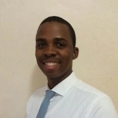

Nkanyiso Nzama | WDD130
Hello! My name is Nkanyiso Nzama and I am from Durban, South Africa. I enjoy learning new things. My favorite desert is blueberry cheesecake.
Hello! My name is Nkanyiso Nzama and I am from Durban, South Africa. I enjoy learning new things. My favorite desert is blueberry cheesecake.